这份改良指南专门为腰椎不适人群设计，在原版6个动作基础上进行了安全调整，并新增了腰部保护、核心稳定训练环节。
每个动作都标注了腰椎安全等级（安全/谨慎/禁止），你可以根据自身腰椎状况灵活选择。
腰椎不好人群的禁忌动作
- 任何塌腰（腰部离开墙面/床面）的姿势
- 大幅度后伸动作（如标准臀桥的高顶、蝗虫式）
- 腰部旋转类动作（如俄罗斯转体、扭腰）
- 大幅度前屈动作（如双手触地摸脚）
- 负重深蹲/硬拉等脊柱受压动作
腰椎友好的动作原则
- 腰部始终有支撑（毛巾、床面、墙面）
- 动作幅度减半，宁可少做也不要勉强
- 先激活核心再练臀/背，保护腰椎
- 发力感在目标肌群，不在腰部
- 出现腰部刺痛立即停止，不可忍痛坚持
腰部保护与激活（必做）
这部分是腰椎友好训练的核心，放在每次训练的最前面。目的是唤醒核心肌群，为腰椎建立"保护罩"。
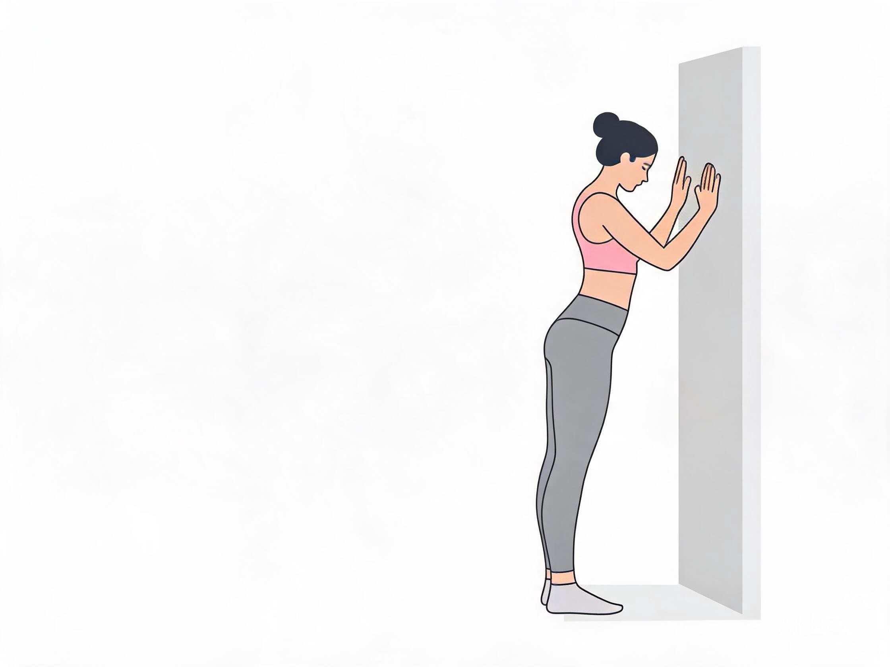
面对墙面站立，双手扶墙与肩同宽。吸气时轻轻弓背低头（猫式），呼气时微微塌腰抬头（牛式），动作非常缓慢、幅度极小。
- 双手距离墙面约一臂远，身体微微前倾
- 弓背时感受脊柱一节一节卷起
- 不要用力弓背，幅度控制在"刚好感觉到脊柱在活动"即可
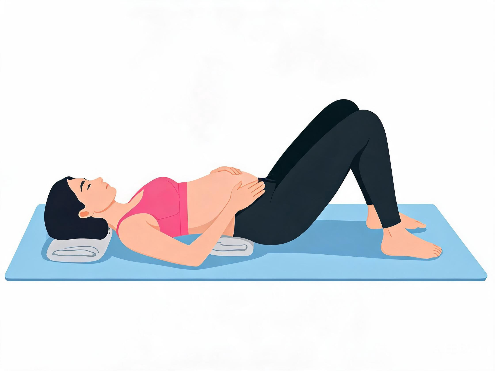
平躺，膝盖弯曲双脚踩地，腰下垫一条折叠毛巾。双手放在腹部。吸气时腹部鼓起（腰下毛巾被顶起来），呼气时腹部收紧（毛巾被压下去），感受腹部深层肌肉的收缩。
- 全程腰部贴紧毛巾，不要拱腰
- 呼吸要慢：吸气4秒，屏气2秒，呼气6秒
- 不要耸肩或挺肚子，只动腹部
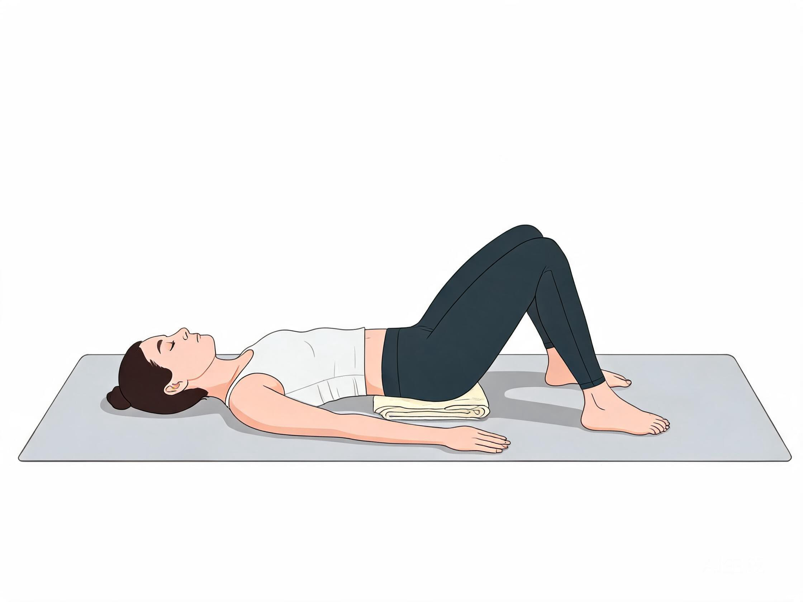
仰卧，双膝弯曲双脚踩地，腰下垫毛巾。缓慢将腰部向地面压（骨盆微微后倾），让腰下的毛巾被压扁，保持3秒后放松。这是训练腰椎"中立位"的最佳动作。
- 臀部不离地，只动骨盆
- 想象肚脐向脊柱方向靠近
- 腰部压下去时应该是舒适的感觉，不是疼痛
二、核心稳定训练（新增）
这4个动作是物理治疗师常用的腰椎康复训练，进一步强化核心保护腰椎的能力。
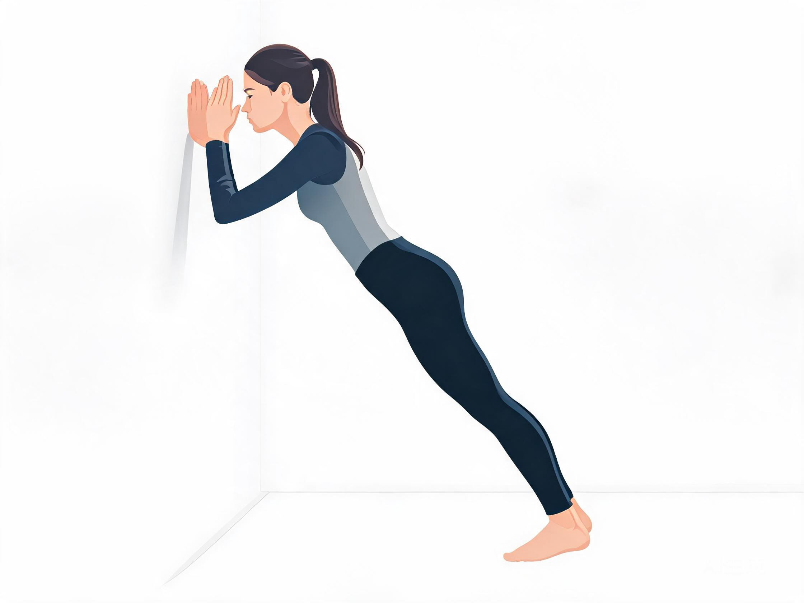
面对墙面，前臂贴墙（不是手掌），双脚与髋同宽、后跟踩实地面。身体呈一条斜线，收紧腹部，臀部夹紧。脚离墙越远难度越大。注意：脚退太远容易重心前移导致前倒，保持身体斜度30-45度即可。
- 双脚分开与髋同宽，支撑面越大越稳
- 脚后跟始终踩实地面，不要抬跟
- 前臂贴墙比手掌更稳，还能保护手腕
- 感觉往前倒就缩短脚距，身体斜度回到30度左右
- 仍不稳 ➜ 改为跪姿退阶：双膝跪地（垫毛巾），只抬起小腿，身体斜度更小，不会前倒
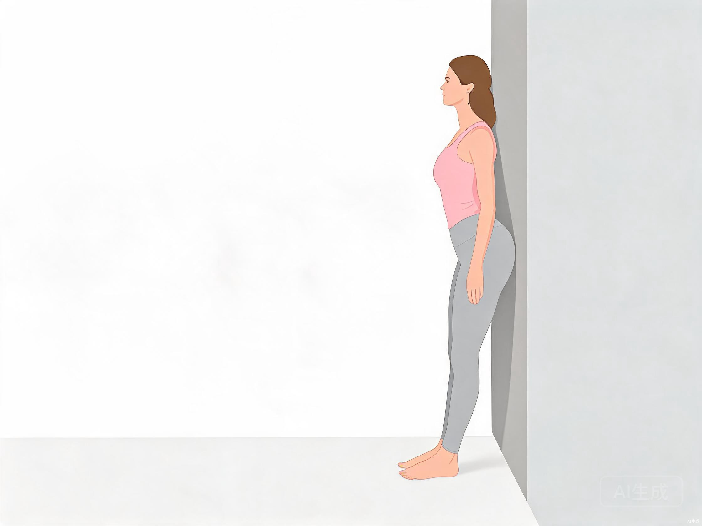
背靠墙站立，脚后跟离墙约15厘米。吸气放松，呼气时轻轻将尾骨向内收、腰部压向墙面，让腰椎和墙之间没有缝隙，保持3秒后放松。
- 动作极小，只需要"感受到腰部贴墙"即可
- 可以每天做，随时做，零负荷
- 不要用力过猛，轻柔地让腰贴近墙面
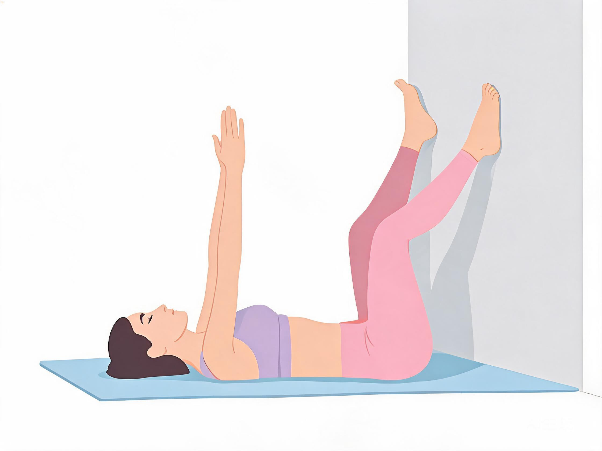
平躺，臀部靠近墙面，双脚屈膝踩墙。双手指向天花板。呼气时缓慢放下对侧手脚（手向头顶、脚向地面），全程腰部必须贴紧地面。吸气还原。
- 腰下垫薄毛巾，全程感受毛巾被压住
- 脚踩墙提供锚定点，比标准死虫更容易稳住骨盆
- 一旦腰部拱起离开地面，立刻缩小手脚下降幅度
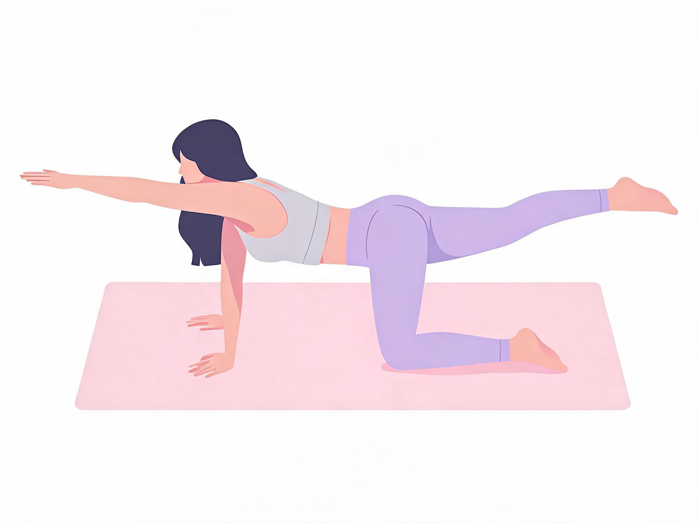
手膝四点撑地，大腿垂直地面，手臂垂直地面。背部放平如桌面。呼气时缓慢伸展对侧手脚（手向前、腿向后），保持背部水平不动，停留2秒后还原。
- 想象背上放了一杯水，不能洒出来
- 不稳就先做单侧：只伸手或只伸腿
- 一旦感觉背部塌陷或旋转，立即收回手脚
三、靠墙练臀部（改良版）
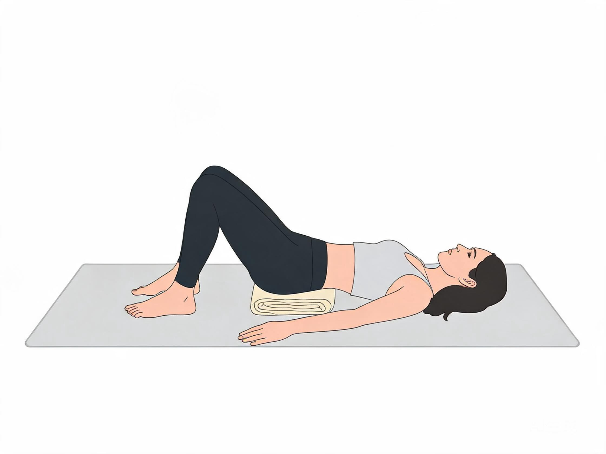
平躺，双脚踩地，腰下垫折叠毛巾提供支撑。只用臀部微微向上顶，臀部离地不超过5厘米，保持2秒落下。全程腰部贴紧毛巾，不拱腰。
- 腰下垫毛巾是关键，全程不能离开
- 发力集中在臀部，不是腰部
- 如果腰部有压力感，立即停止，回到骨盆后倾练习
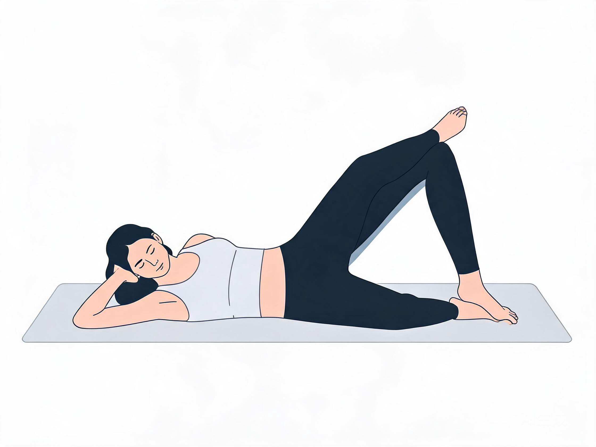
侧躺，后背贴墙，双膝弯曲脚跟并拢。上方膝盖像贝壳打开，但开合幅度控制在15度以内，骨盆始终贴墙不动。
- 骨盆贴墙是安全底线，一旦离开立即停止
- 只做"感觉到臀部侧面微微发力"的幅度
- 膝盖不要开太大，15度约等于一个拳头的宽度
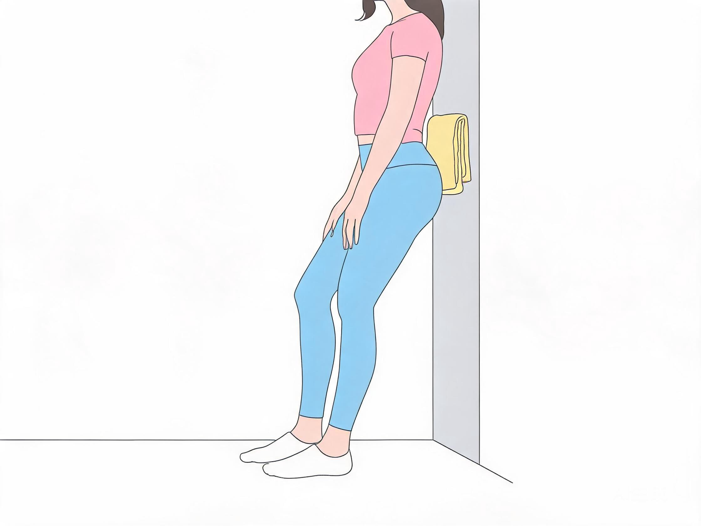
后背贴墙，但腰部和墙之间垫一条折叠毛巾。下蹲幅度减小——大腿只需要下降15-20度（约1/4深蹲深度），全程夹紧臀部。
- 腰部垫毛巾，全程腰贴毛巾
- 膝盖不超过脚尖，下蹲幅度很小
- 如果腰离开毛巾，立即站起休息
四、靠墙练后背（改良版）
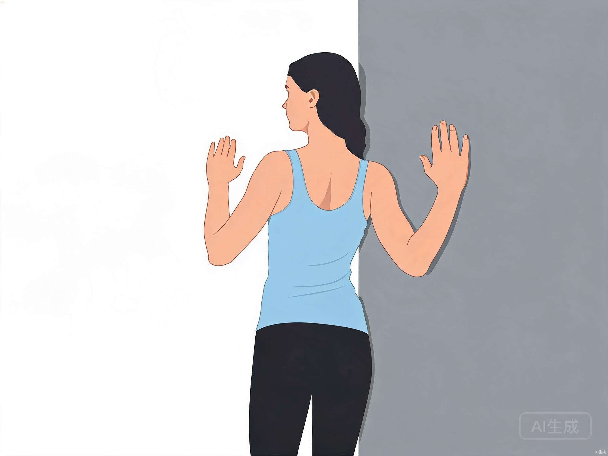
后脑勺、上背、臀部贴墙，腰下可垫薄毛巾。手臂弯曲90度贴墙成W型，只向上滑动到额头高度，不继续往上。全程腰不离墙。
- 手臂滑到额头即可，不需要到头顶
- 腰下垫薄毛巾，全程腰部有支撑
- 一旦感觉腰部拱起离开墙面，立刻回到起始位置
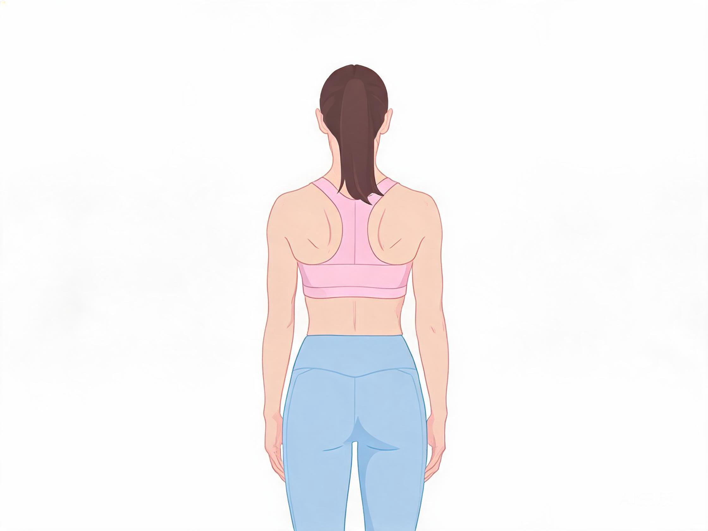
站立，双脚与肩同宽，膝盖微屈，腹部微收。双臂自然下垂，双肩向后向下夹紧，肩胛骨往中间挤，保持3秒放松。不需要靠墙。
- 站立做比靠墙做更安全，腰椎零压力
- 膝盖微屈、收腹，保护腰椎中立位
- 不要耸肩，只动肩胛骨
原版靠墙超人要求双手向后打开、胸口前挺，这会导致腰椎过度后伸，对腰椎不好的人群风险较高。
- 站立后夹可以达到同样的背部训练效果
- 零腰椎压力，更加安全
- 如果一定要做靠墙超人，只做手臂向后微开的幅度，胸口不要挺
原版 vs 改良版对比
| 动作 | 原版 | 改良版 | 腰椎等级 |
|---|---|---|---|
| 墙面臀桥 | 臀部完全离地，顶峰停2秒 | 臀部离地≤5cm，腰下垫毛巾 | 谨慎 |
| 靠墙蚌式 | 开合45度 | 开合≤15度，骨盆贴墙 | 安全 |
| 靠墙静蹲 | 大腿平行地面 | 浅蹲15-20度，腰垫毛巾 | 谨慎 |
| 墙面天使 | 手臂滑到头顶 | 手臂滑到额头 | 安全 |
| 肩胛骨后收 | 靠墙站立 | 站立（不靠墙） | 安全 |
| 靠墙超人 | 双手后开，胸口前挺 | 替换为站立后夹 | 不建议 |
| 靠墙平板支撑 | 无原版（新增） | 小臂斜撑墙，身体一条直线，比地面负荷小40% | 安全 |
| 靠墙骨盆后卷 | 无原版（新增） | 站姿尾骨内收、腰压墙，零负荷找回中立位 | 安全 |
| 死虫式（脚踩墙） | 无原版（新增） | 腰全程贴地，脚踩墙稳定骨盆，核心王牌 | 安全 |
| 鸟狗式（四点支撑） | 无原版（新增） | 背平不塌，不稳先做单侧，背伸肌+核心 | 谨慎 |
腰椎友好版 完整流程（约15~20分钟）
流程分为四个部分：腰部激活 → 核心稳定 → 臀部训练 → 背部训练。总时长约15~20分钟，可根据自身状况灵活调整。
腰椎友好训练核心原则
核心激活是第一步
- 做任何臀/背训练之前，必须先做腹式呼吸 + 骨盆后倾
- 核心激活就像给腰椎系上"安全带"，绝对不能跳过
腰部支撑不能少
- 仰卧动作：腰下始终垫毛巾
- 靠墙动作：腰部和墙之间垫薄毛巾
- 站立动作：膝盖微屈、收腹，保持腰椎中立位
幅度减半原则
- 所有动作幅度都减到原版的 1/3 ~ 1/2
- 宁可"感觉没练到"，也不要让腰部有压力
- 腰椎友好训练的强度来自"精准发力"，不是"大动作"
立即停止的信号
- 腰部出现刺痛、电击感、放射到腿部的疼痛
- 做完某个动作后腰部酸痛持续超过2小时
- 任何动作让腰部有"被挤压"的感觉